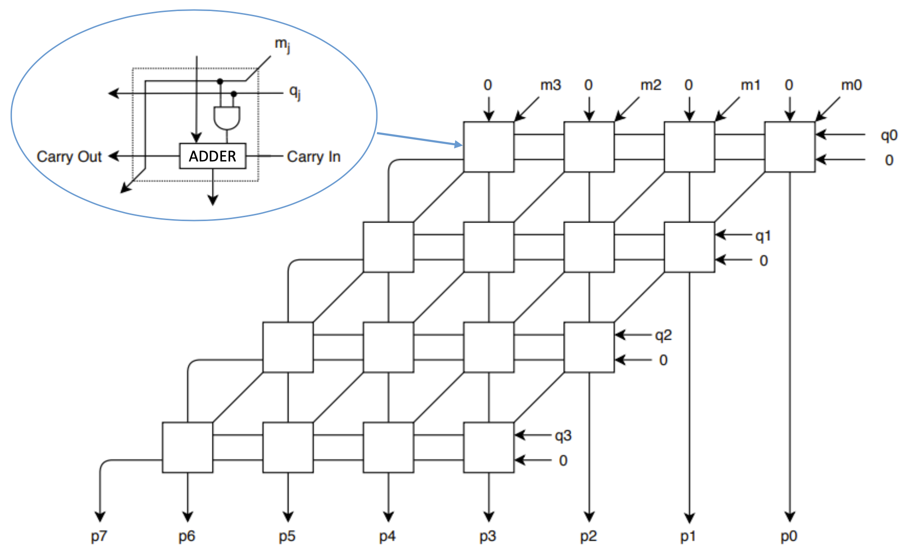

2 Arithmetic in computers
2.1 Binary numbers
In light of what we have seen so far, it becomes clear why computers work with the binary number system and not with the decimal one with which we humans are used to reasoning: the electronic components operate by alternating only two states following Boolean algebra, just as there are two possible digits in binary numbers. It is no coincidence that the minimum unit of information is called a bit, which is a portmanteau of the terms binary digit, whose formal definition is:
the amount of information necessary and sufficient to remove the uncertainty related to the occurrence of one of two equiprobable and mutually exclusive events
In simple terms: bits allow to discriminate between two states, and this is sufficient to guarantee the functioning of the various circuits that make up a computer; this duality, moreover, fits perfectly with Boolean logic, which operates on logical propositions that contemplate only the values true and false (as demonstrated by Shannon in 1938).
All this has been taken for granted so far: when we introduced the first combinatorial circuits (the adders and subtractors) the various numbers considered in the operations were evidently in binary form, just as the decimal counter, introduced among the sequential circuits, was nothing more than a converter of decimal digits into binary numbers. Now we will go deeper into this numerical system to better understand how information is stored, processed and manipulated within digital processors.
2.1.1 Multiples of bits
The bit turns out to be too small a unit of scale to describe the amount of information associated with the amount of data to be processed today. For this reason, derived units are used as multiples of the bit, indicated in the following table.
The byte is certainly the best-known unit deriving from the bit: it is, in the modern standard, the number of bits useful for encoding a single character. The best definition of a byte is that given by David Brailsford:
«Any agglomeration of bits that your machine deemed to be worthy of holding a character.»
Over time, different standards have existed and coexisted to define a byte: today’s is the result on the one hand of reaching a sufficiently high number of values for character encoding (\(2^8=256\)) and on the other of the convenience, for reasons of calculation and optimization, of having a power of two as a fundamental unit (think, for example, of the selectors in a multiplexer).
A nibble, on the other hand, is equivalent to half a byte1 and we will see its usefulness in writing bytes in hexadecimal.
Finally, a word is composed of the number of bits that a processor can process at a time, that is, in a single clock cycle; in reality, the term can be used to refer to a bit string of a specific length, where by string we mean a group of characters (letters or numbers, so in general bytes): for example, three characters form a 24-bit word.
Due to the base-two numbering system, the multiples indicated by prefixes such as kilo, mega, giga and so on will not go as \(10^3\), \(10^6\), \(10^9\), \(\dots\) but as \(2^{10}\), \(2^{20}\), \(2^{30}\), \(\dots\)
Let’s see, for example, how many bits are contained in a megabyte:
\[ 1 \ MB=2^{20} \ B = 2^{20}\cdot8 \ b = \num{8388608} \ b \]
being \(B\) the symbol for the byte and \(b\) that for the bit.
2.1.2 Conversion to and from decimal
To understand how to switch from the binary system to decimal system (and vice versa), it is necessary to remember how a numbering system works in general.
In any system, a certain number of symbols is available, which represents the base of the system itself: there will be ten symbols for the decimal system and two for the binary system. The count begins by considering a digit that starts by assuming the value \(1\) and continues until the symbols are exhausted; at that point a reset occurs: this digit is set to \(0\) and a new digit is placed in front of it, which will also start from \(1\) and will be updated every \(10\) units.
The system just described is a positional type system, in the sense that each digit assumes a different weight based on its position in the number itself. Any decimal number, according to what has been explained, can be broken down as follows:
\[ \begin{aligned} 36541&=3\cdot\num{10000}+6\cdot\num{1000}+5\cdot100+4\cdot10+1\cdot1=\\ &=3\cdot10^{4}+6\cdot10^{3}+5\cdot10^2+4\cdot10^1+1\cdot10^0 \end{aligned} \]
The general formula, called \(c_i\) the generic digit of a number \(N\) with \(n\) digits (scrolling from right to left), will be the following:
\[ N=\sum_{i=1}^{n}c_i\cdot10^{i-1} \]
The binary numbering system is analogous to what has been described: the only difference, as we know, is that the symbols are only two, \(0\) and \(1\), and therefore in the count the reset will occur much earlier; this implies that a number expressed in binary will always be less compact than the same number expressed in decimal.
The useful formula to convert numbers from binary to decimal, therefore, will be
\[ \label{eq:arithmetic-conversion-binary-to-decimal} \boxed{N=\sum_{i=1}^nc_i\cdot2^{i-1}} \]
It now remains to understand how to convert a decimal number into a binary number. Let’s stay for now in the context of the decimal system and think about the inverse operation with respect to the multiplication that we used in the decomposition, that is the division; what happens if we divide any decimal number by \(10\)?
Let’s think, for example, of the number \(357\): the integer division will give us \(35\) with a remainder of \(7\); repeating the process on \(35\) we will get \(3\) with a remainder of \(5\), and applying it one last time to \(3\) we will have \(0\) with a remainder of \(3\). In practice, the remainders, placed from right to left, will give us the same number again.
For the conversion to binary we will not have to do anything different, but considering the base \(2\): the remainders can only be \(0\) (in the case of an even number) or \(1\) (in the case of an odd number), and put in order they will form the number in the desired binary form. This division algorithm is called the double-dabble algorithm.
Convert \(82_{10}\) (82 in decimal) to binary.
Let’s use the double-dabble algorithm:
\[ \begin{aligned} 82//2=41 \ \text{with remainder} \ \ &\boxed{0}\\ 41//2=20 \ \text{with remainder} \ \ &\boxed{1}\\ 20//2=10 \ \text{with remainder} \ \ &\boxed{0}\\ 10//2=5 \ \text{with remainder} \ \ &\boxed{0}\\ 5//2=2 \ \text{with remainder} \ \ &\boxed{1}\\ 2//2=1 \ \text{with remainder} \ \ &\boxed{0}\\ 1//2=0 \ \text{with remainder} \ \ &\boxed{1} \end{aligned} \]
So we find:
\[ 82_{10}=1010010_2 \]
Let’s check the correctness of the result through the formula [eq:arithmetic-conversion-binary-to-decimal]:
\[ \begin{aligned} N&=1\cdot2^6+0\cdot2^5+1\cdot2^4+0\cdot2^3+0\cdot2^2+1\cdot2^1+0\cdot2^0=\\ &=64+16+2=82 \end{aligned} \]
2.2 Hexadecimal numbers
If we want to switch to a number system with a base greater than \(10\), the number of symbols conventionally used for digits (from \(0\) to \(9\)) is no longer enough, so it is necessary to introduce new symbols. By convention, it was decided to take the letters of the Roman alphabet in uppercase form, so \(A\), \(B\), and so on; in the case of hexadecimal numbers, letters up to \(F\) can be found, which will represent the value \(15\) in decimal.
The hexadecimal number system is widely used in the field of electronics and programming, due to its base which is a direct power of two: since \(16=2^4\), in fact, each digit in hexadecimal can always be expressed uniquely through four bits, as we can see in the following table.
We understand, therefore, that each hexadecimal number can be easily converted into binary by directly replacing the digit with the respective nibble. For the same reason, a byte (which, we remember, is the minimum unit of data that can be accessed in a computer) can be expressed by means of two hexadecimal digits, making its encoding simpler and more immediate.
The conversion to and from decimal follows the same logic as those seen for the binary system, that is, the decomposition into factors according to the base and the division algorithm, called in this case hex-dabble algorithm.
Convert \(10A4_{16}\) to binary.
Let’s convert each single digit using the table [tab:aritmetica-esadecimale-quattro-bit]:
\[ \begin{cases} 1=0001\\ 0=0000\\ A=1010\\ 4=0100\\ \end{cases} \Longrightarrow \ 10A4_{16}=1\hspace{0.8mm}0000\hspace{0.8mm}1010\hspace{0.8mm}0100_2 \]
Convert \(650_{10}\) to hexadecimal.
Let’s apply the hex-dabble algorithm:
\[ \begin{aligned} 650//16=40 \ \text{with remainder} \ \ &\boxed{10}\\ 40//16=2 \ \text{with remainder} \ \ &\boxed{8}\\ 2//16=0 \ \text{with remainder} \ \ &\boxed{2} \end{aligned} \]
So we find:
\[ 650_{10}=28A_{16} \]
Let’s check the correctness of the result by decomposing it into factors:
\[ N=2\cdot16^2+8\cdot16^1+10\cdot16^0=512+128+10=650 \]
2.3 Modular arithmetic
Working with bytes means working with a finite number of bits. Since bytes can represent numbers (within the context of arithmetic operations performed by the computer) they cannot be infinite in number, but will fall within a precise range: an \(8\)-bit byte, for example, corresponds to \(256\) different states, so associated a state with a number (expressed in binary form) we will have to deal with, at most, \(256\) different numbers.
In this context it is useful to study an arithmetic based on integers and in finite quantity, called . It takes into account a modulus which, in our case, corresponds precisely to the maximum value expressible through binary digits.
Let’s try, for example, to perform the sum between the binary numbers \(10011111\) (\(159\)) and \(01100100\) (\(100\)):
The most significant bit, that is the one on the far left, is the ninth, so it cannot be included in the final byte which will simply contain \(00000011\), that is \(3\): this bit, therefore, we will have to subtract \(2^9=256\) from the result.
We will therefore write:
\[ 259\equiv3 \ (mod \ 2^9) \ \ \text{or} \ \ \ 259 \ mod \ 2^9=3 \]
In modulo \(2^9\), therefore, it is correct to state that \(159+100=3\).
When the sum or difference between two numbers produces a number outside the range given by the number of bits available, it is said that the operation has gone into arithmetic overflow.
2.4 Signed binary numbers
To pass from the domain of natural numbers \(\mathbb{N}\) to that of relative integers \(\mathbb{Z}\) it is necessary to adopt a convention to distinguish negative numbers from positive ones, also trying to understand how the operations of addition and subtraction can return the correct values.
We will list below three different representations of relative numbers in binary form:
: it is the most intuitive method to understand but also the least practical from a computational point of view.
According to this convention, the most significant bit assumes the role of sign: \(0\) for positive numbers and \(1\) for negative ones; this means that with \(n\) bits we will have one dedicated to the sign and \(n-1\) dedicated to the magnitude: in general, therefore, we will be able to represent the numbers from \(-2^{n-1}-1\) to \(2^{n-1}-1\).
The first problem is given by the fact that the number \(0\) has two representations: the positive one (\(00\dots0\)) and the negative one (\(00\dots0\)). This complicates the machine’s calculations not a little, since having two representations for what is a single value can cause undesirable behavior: just think that adding \(-0\) to any positive number the result will return the same number but with a changed sign, and the same goes for \(+0\) added to a negative number.
The sum between two numbers, moreover, requires more steps to be performed: first it is necessary to compare the magnitude of the two numbers, in order to set as the sign bit of the result the one associated with the larger number; then, it is necessary to perform the sum between the magnitudes if they are numbers with the same sign, or perform the difference between the larger and the smaller if they are numbers with opposite signs.
: the convention is the same as the sign-magnitude representation, with the difference that the opposite of a number is obtained by inverting all its bits.
The dual representation of zero is also present in this case: we will have that \(00\dots0\to+0\) and \(11\dots1\to-0\). The sum between two numbers, however, is simplified: by adding two numbers, in fact, the result will always be exact; the only extra element to consider is a possible final carry: if this is present, in fact, you must add \(1\) to the result to get the correct sum.
To understand the reason for the addition of this final carry, also called end-around carry, just think of the ones’ complement of a number \(N\) as the subtraction of the same number from \(11\dots1\):
\[ \bar{N}=11\dots1-N=(2^n-1)-N \]
By performing the sum of a number \(M\) and \(\bar{N}\) you would get
\[ M+\bar{N}=(M-N)+2^n-1 \]
and ignoring the final carry in the sum (due to the limited number of bits) means the result of a contribution of \(2^n\):
\[ M+\bar{N}\to(M-N)-1 \]
In this case, therefore, it is correct to add \(1\) to the final result:
\[ M+\bar{N}=(M-N)-1+1=M-N \]
: the same convention as the ones’ complement, with the difference that after inverting all the bits it is necessary to add \(1\) to get the number with the opposite sign.
We had already introduced this representation when talking about the subtractor (paragraph [sec:complemento-a-due]), so we already know that it corrects the two defects of the previous conventions: zero is encoded in a single sequence, that is \(00\dots0\), and for this reason the smallest representable number goes from \(-2^{n-1}-1\) to \(-2^{n-1}\); moreover, the sum returns the desired result without problems, since the end-around carry, in a certain sense, is already in the complementation of the number itself.
Calculate
\[ 10011-11100 \]
using the two’s complement method.
Let’s write the two’s complement of \(11100\):
\[ 11100 \ \longrightarrow \ 00011+1=00100 \]
Let’s perform the sum:
To check the correctness of the result, let’s convert everything to decimal:
\[ \begin{aligned} &10011 \ \longrightarrow \ 16+2+1=19\\ &11100 \ \longrightarrow \ 16+8+4=28 \end{aligned} \]
We know that \(19-28=-9\), so the two’s complement of the result obtained must give us \(9\):
\[ 10111 \ \longrightarrow \ 01000+1=01001 \ \longrightarrow \ 8+1=9 \]
2.5 Product of binary numbers
Performing the product of binary numbers, as is also true for the sum and for the difference, is equivalent to what we already know from the decimal system. The product in column will be more extensive, since binary numbers are generally less compact, but at the same time much simpler, since the product will only involve the digits \(0\) (which cancels the entire number by which it is multiplied) and \(1\) (which returns the number by which it is multiplied).
Let’s see, for example, the product of \(1101\) and \(1011\):
In general, if the first number is composed of \(n\) bits and the second number is composed of \(m\) bits, the final product will be composed of \(n+m\) bits.
Figure 1.1 shows the electronic implementation of the column product just seen. It considers two numbers: \(M\), composed of the bits \(\left(m_3,m_2,m_1,m_0\right)\), and \(Q\), composed of the bits \(\left(q_3,q_2,q_1,q_0\right)\), which will give as product \(P\), expressed by \(\left(p_7,p_6,p_5,p_4,p_3,p_2,p_1,p_0\right)\). The product between the individual bits is simply given by the AND logic gate, and the result is added to the upper digit in the same column by means of an adder, at the same time carrying the carry to the left so that the sum is coherent along all the columns.

2.6 Bitwise operations
So far we have considered operations that involved entire bytes, but sometimes it is useful to act on single bits of information: in some memory registers, for example, each bit that composes them has a different function, so it is important to be able to access and modify the information contained in each of them. Operations that act at the bit level are called .
2.6.1 Bit-masking
This is a standard technique that makes use of masks, that is, sequences of bits, which are to the registers to isolate, modify or extract specific bits. They are usually indicated by hexadecimal numbers.
Let’s see the four main operations applied to a register \(R\):
Set a bit to 1: an OR is performed with a mask composed of 0s except for a 1 in the position of the bit concerned.
Set a bit to 0: an AND is performed with a mask composed of 1s except for a 0 in the position of the bit concerned.
Invert a bit: a XOR is performed with a mask composed of 0s except for a 1 in the position of the bit concerned.
Test a bit: an AND is performed with a mask composed of 0s except for a 1 in the position of the bit concerned.
Check if the MSB (Most Significant Bit) of a 32-bit register is set.
To do a check on a bit of a register we must build a mask composed entirely of 0s except for a 1 in the position of the bit of our interest. Since the register is 32 bits, the mask will express the binary number \(100\dots0\), where the \(0\)s are 31, which in hexadecimal form becomes:
\[ 100\dots0_2=2^{31}=2^3\cdot2^{28}=2^3\cdot\left(2^4\right)^7=8\cdot16^7=80000000_{16} \]
Let \(R\) be the register, therefore, the check will be given by
\[ R \ \textit{AND} \ 0\text{x}80000000 \]
If the bit in question is equal to \(0\) the result will return \(0\)x\(00\), otherwise it will return the mask itself, that is \(0\)x\(80000000\).
Get the third bit (starting from the least significant bit) of an 8-bit register.
We will have to repeat what we saw in the previous exercise, that is, build a mask of all 0s except for the third to last place. The conversion to hexadecimal will trivially give us \(4\):
\[ 00000100_2=2^2=4\cdot16^0=4_{16} \]
We will therefore perform:
\[ R \ \textit{AND} \ 0\text{x}04 \]
If this operation returns \(0\)x\(00\) this means that the bit was 0, while if we get \(0\)x\(04\) then the bit was 1.
2.7 Real numbers
So far we have dealt with the set of natural numbers and relative integers, studying three different representations of signed binary numbers. With a finite number of bits we can also represent numbers belonging to \(\mathbb{R}\), with the obvious consequence that they will be approximated: the greater the number of bits available for a number, the better this approximation will be.
We will see below two different representations of real numbers through bits: fixed point and floating point.
2.7.1 Fixed point
In arithmetic, a part of the bits used to encode a number are dedicated to its decimal part.
Let \(k\) be the total number of bits and \(r\) the number of bits dedicated to the decimal part, the formula that allows the conversion from fixed point to real number is
\[ \boxed{N=\sum_{i=-r}^{k-r-1}c_i\cdot2^{i}} \]
Let’s take, for example, the number \(00110110\) and imagine we have \(r=4\); according to this convention the considered bit string will express:
\[ \begin{aligned} N&=\underbrace{0\cdot2^3+0\cdot2^2+1\cdot2^1+1\cdot2^0}_{\text{Integer part}}\underbrace{+0\cdot2^{-1}+1\cdot2^{-2}+1\cdot2^{-3}+0\cdot2^{-4}}_{{\text{Decimal part}}}=\\ &=2+1+0.25+0.125=3+0.375=3.375 \end{aligned} \]
To convert a real number to fixed point it is necessary to reason separately for the integer part and for the decimal part: for the integer part the double-dabble algorithm that we introduced in paragraph 1.1.2 is sufficient; for the decimal part, instead, we will have to apply, in a certain sense, an inverse algorithm: we double this quantity and extract the integer part of the number obtained until we reach zero. Let’s take an example with the \(0.375\) from the previous example:
\[ \begin{aligned} 0.375\cdot2=0.750 \ \text{which has integer part} \ \ &\boxed{0}\\ 0.750\cdot2=1.5 \ \text{which has integer part} \ \ &\boxed{1}\\ 0.5\cdot2=1 \ \text{which has integer part} \ \ &\boxed{1}\\ 0\cdot2=0 \ \text{which has integer part} \ \ &\boxed{0} \end{aligned} \]
which gives us exactly \(0110\).2
2.7.2 Floating point
Fixed points can represent a limited subset of \(\mathbb{R}\); in order for it to be extended it is useful to switch to arithmetic.
The standard that we will see below is called IEEE 754, and it is the same used in the so-called float variables declared in the C programming language.
Each number is determined by \(32\) bits (in order):
\(1\) bit for the sign \(\boldsymbol{\red{S}}\)
\(8\) bits for the exponent \(\boldsymbol{\orange{E}}\)
\(23\) bits for the mantissa \(\boldsymbol{\green{M}}\)
The conversion formula is as follows:
\[ \boxed{N=(-1)^{\boldsymbol{\red{S}}}\cdot1.\boldsymbol{\green{M}}\cdot2^{\boldsymbol{\orange{E}}-127}} \]
Let’s specify three important aspects:
The bit associated with the sign is the most significant (being the first, therefore the one on the far left): floating point arithmetic, therefore, follows the sign-magnitude representation
The exponent, being encoded by eight bits, can go from \(0\) to \(255\), so the exponential will assume as minimum value \(2^{-127}\) and as maximum value \(2^{128}\)
The mantissa is calculated exactly like the decimal part in fixed point arithmetic
Let’s consider a very simple example:
\[ \red{1}\orange{01111111}\green{01000000000000000000000} \]
The mantissa consists solely of \(0\)s except for the second bit, which being associated with \(2^{-2}\) will give the result \(0.25\). Putting it all together we get:
\[ N=(-1)^1\cdot1.25\cdot2^{127-127}=-1.25 \]
Let’s now see how the two main operations in floating point arithmetic take place:
Sum between floating points
As in the sign-magnitude representation, the sign of the result is established based on a comparison between the magnitudes of the numbers.
That said, the sum we will have to perform will be
\[ \label{eq:aritmetica-floating-point-somma} M_1\cdot2^{E_1}+M_2\cdot2^{E_2} \]
The number with the lowest exponent is identified: the mantissa relative to it will be redefined in such a way that the two exponents are equal to each other. Assuming that \(E_1\) is the lowest exponent we will pass from the mantissa \(M_1\) to the mantissa \(M'_1\) so that:
\[ M_1\cdot2^{E_1}=M'_1\cdot2^{E_2} \]
Substituting in [eq:aritmetica-floating-point-somma] we get:
\[ M'_1\cdot2^{E_2}+M_2\cdot2^{E_2}=\left(M'_1+M_2\right)2^{E_2} \]
which can finally be normalized to \(1.M\cdot2^{E}\).
Let’s see the following example:
\[ 1.0001\cdot2^2+1.1101\cdot2^4 \]
The smallest exponent is that of the first number, so let’s rewrite this number so that the exponents are equal:
\[ 0.010001\cdot2^4+1.1101\cdot2^4=(0.010001+1.1101)2^4 \]
By renormalizing we finally have:
\[ 10.000101\cdot2^4=1.0000101\cdot2^5 \]
Product between floating points
It is sufficient to apply the algebraic rules we know:
\[ M_1\cdot2^{E_1}\cdot M_2\cdot2^{E_2}=\left(M_1+M_2\right)2^{E_1+E_2} \]
Remember that the result must be normalized to \(1.M\cdot2^E\).
The same, of course, also applies to the ratio between floating points:
\[ \frac{M_1\cdot2^{E_1}}{M_2\cdot2^{E_2}}=\frac{M_1}{M_2}\cdot2^{E_1-E_2} \]
Calculate
\[ 23.75_{10}+4.5_{10} \]
using floating point.
To convert the numbers to binary you would have to use the double-dabble algorithm for the integer part and the corresponding algorithm for the decimal part; however, being particularly simple in this case, I will trivially write the numbers in the form of contributions in powers of two:
\[ 23.75_{10}=2^4+2^2+2^1+2^0+2^{-1}+2^{-2}=10111.11_2 \]
\[ 4.5_{10}=2^2+2^{-1}=100.1_2 \]
In floating point form the sum we have to perform is
\[ 1.011111\cdot2^4+1.001\cdot2^2 \]
Let’s make sure to equalize the powers of two:
\[ 1.011111\cdot2^4+0.01001\cdot2^4=(1.011111+0.01001)2^4 \]
Let’s perform the sum:
So we get:
\[ 1.110001\cdot2^4 \]
To check the correctness of the result, let’s convert this number to decimal:
\[ 11100.01_2=2^4+2^3+2^2+2^{-2}=16+8+4+0.25=28.25_{10} \]
which is exactly \(23.75_{10}+4.5_{10}\).